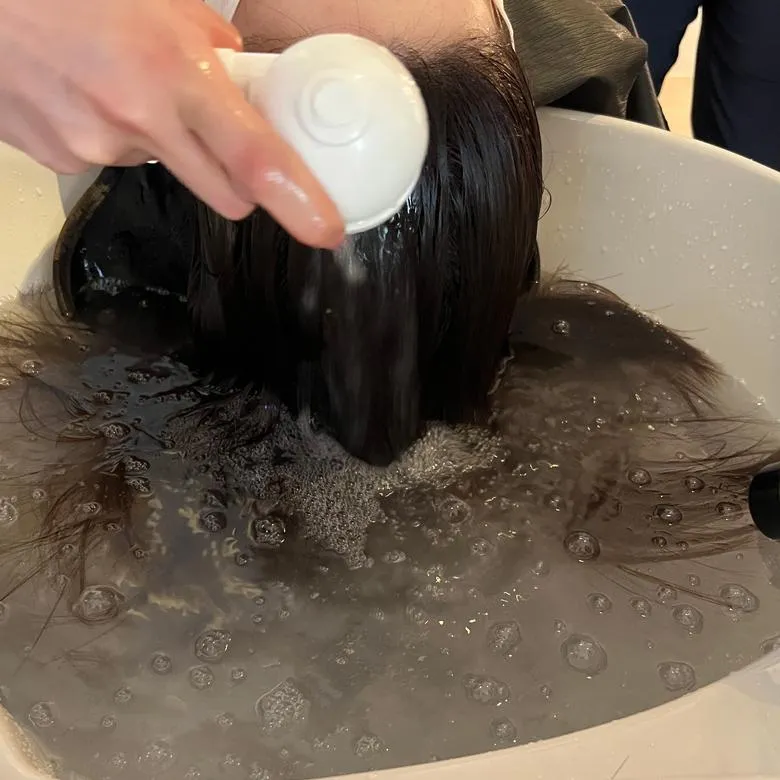
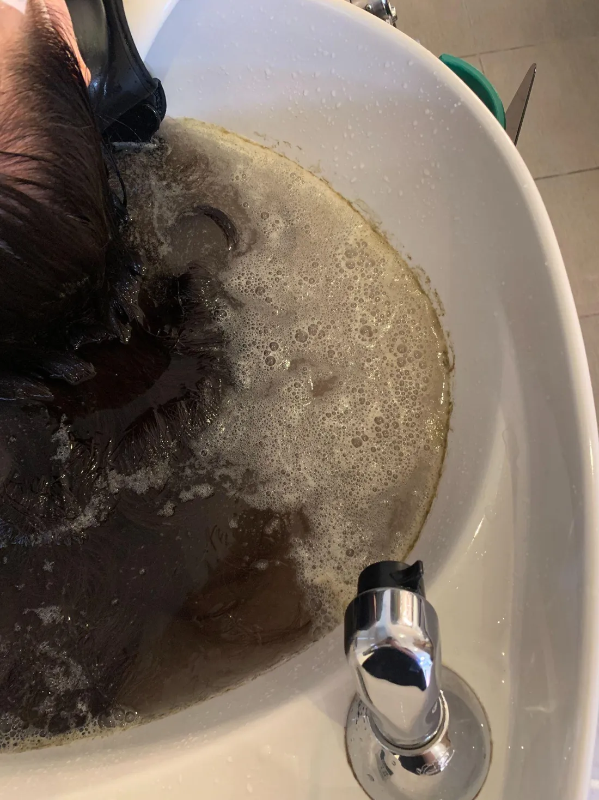
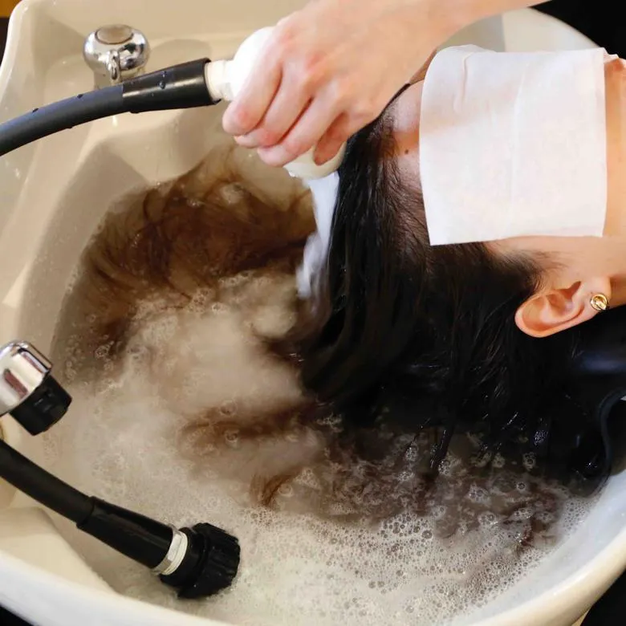
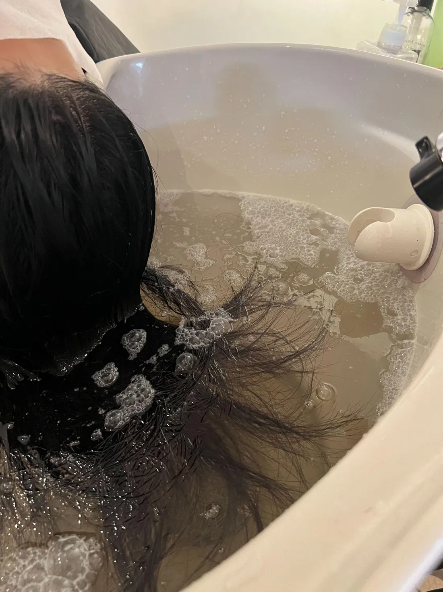
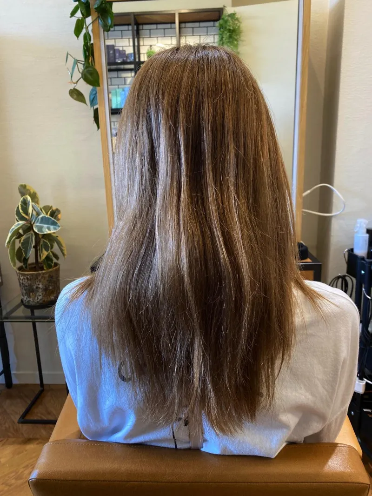
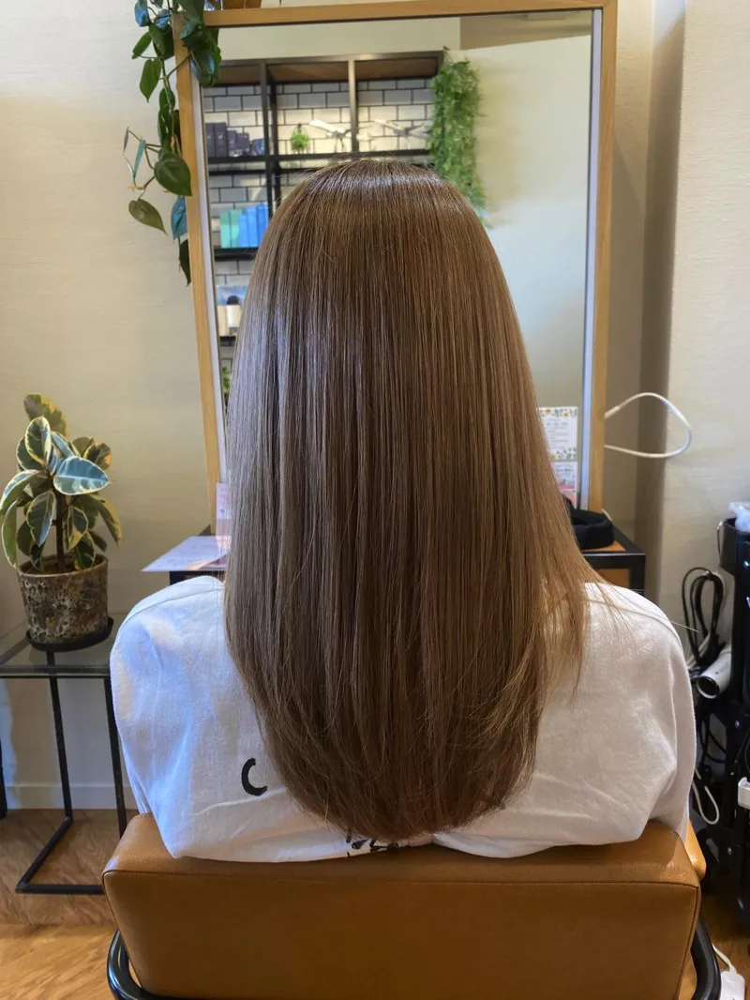
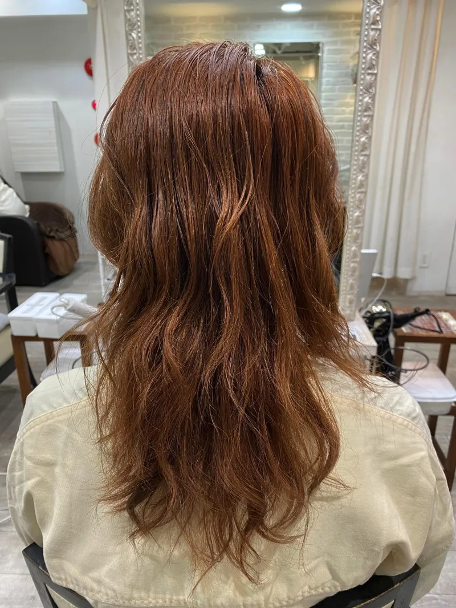
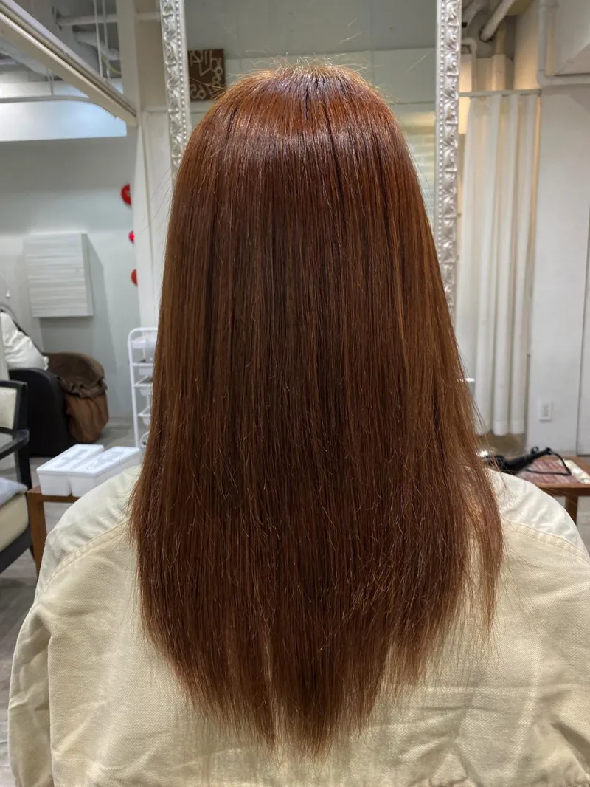
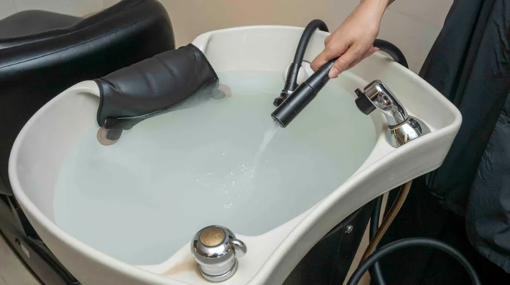
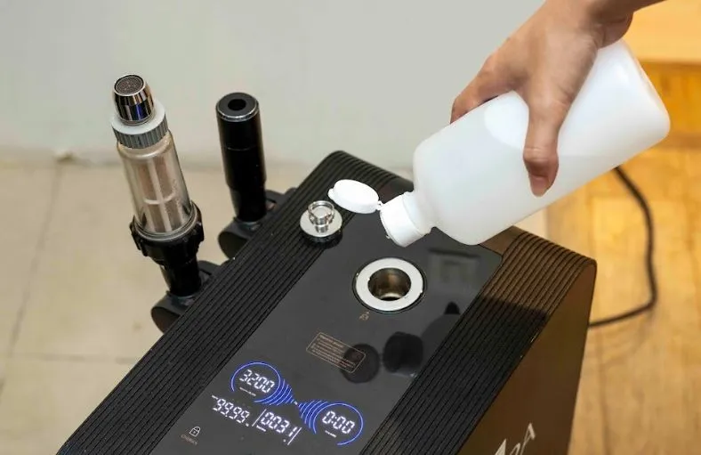

氢护理新选择
通过专用氢护理设备，为沙龙服务增加新选择。


H2 ONEST DETOSPA专为专业沙龙打造
专业氢护理
DETOSPA 是面向专业美发沙龙的高浓度氢头部护理设备。设备循环利用洗发池中的温水，可用于约10分钟的护理流程。
产品介绍
将氢护理融入现有的头皮与头发护理服务。
可在染发、烫发、拉直后，或头部SPA、头皮护理及护发护理前，结合现有项目使用。
以下照片拍摄于日本沙龙的DETOSPA护理过程中。氢水在设备中循环，同时在洗发池中冲洗头发。




图片为护理示例。实际情况因发质及之前的护理项目而异。
护理示例


DETOSPA护理示例（日本沙龙）


包含DETOSPA的沙龙护理示例。效果包括当天同时进行的其他护理及造型。
图片为护理示例，实际效果因人而异。
护理流程
将吸水滤头浸入装有温水的洗发池。

手持微纳米气泡发生装置并按下启动按钮。温水经过设备循环，氢溶解于水中。
一边按摩头皮，一边冲洗头发约10分钟。
≈ 10 min充分吹干头发，完成护理。
产品优势
通过专用氢护理设备，为沙龙服务增加新选择。
无需特别安装施工。设备配有脚轮，可根据护理区域灵活移动。

设备主要使用水和电，仍需更换纯净水并定期维护。
护理流程简明，助理人员经过培训并掌握操作步骤后也可提供服务。
护理项目
从染烫后护理到头部SPA前的护理。
使用案例
我们引入DETOSPA，希望以先进的氢护理服务形成差异化。上线仅两个月，已有不少顾客主动预约。顾客表示能较快感受到护理前后的变化，对这项服务很满意。
引入DETOSPA后，顾客对头发的光泽和触感反响很好，也有人表示感觉头部更轻松。顾客对护理体验的满意度有所提升，这项服务已成为店内的重要项目。
这是我们首次引入氢护理项目，顾客反响很好。许多顾客表示护理后能感受到变化，并再次选择这项服务。我们还可以向顾客展示清洗后的情况，借此更深入地交流头皮和头发护理。由于这类服务目前还不常见，也帮助我们吸引了新顾客。
听说护理只需要10分钟时，我还觉得有点短。没想到结束后，感觉像做了30分钟头部SPA一样清爽，头部和颈部也轻松了许多。现在每个月做一次已经成为我的小奖励。
第一次体验DETOSPA时，美发师给我看了清洗后的照片，看到这么多污垢，我很惊讶。吹干后，头发摸起来比平时更柔软顺滑。这项护理很特别，我也推荐给了朋友。
我的头皮比较敏感，以前染发当天晚上有时会发痒。第一次体验DETOSPA后，我很惊讶染发后的不适感没有像往常那样出现。现在每次染发或烫发，我都会选择这项护理。
使用体验仅代表个人感受，不保证效果。
常见问题
无需特别安装施工。使用前请确认电源及使用环境。
精制水约每两周更换一次，并每月使用专用维护液清洁设备内部。请遵循正式使用说明书。
DETOSPA 面向希望增加护理项目的专业沙龙。
参考用量为每月约两瓶500mL精制水。专用维护液需另购。
产品参数
请在避免阳光直射、远离明火的平稳表面上使用。请勿倾斜设备。
产品规格如有变更，恕不另行通知。